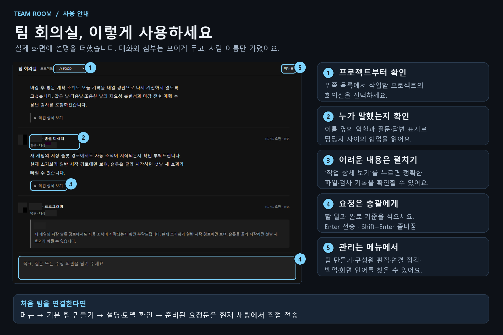

Team Room in one minute / 팀 회의실 사용법
Real app captures, edited with instructions. Personal names are hidden; project content keeps its original language. No live team creation or request submission is demonstrated.
English
한국어


Music: ElevenMusic — created in collaboration with ElevenLabs. The same instrumental is embedded in both versions. Media credits and terms.